Ana Paula — São Paulo, SP
acaba de comprar o Plano Premium · há 2 min
¿Tu hijo pasa demasiado tiempo frente a la pantalla? Hay algo que puede preferir.
Cambia el celular por horas de creatividad con +500 moldes de Paper Squishy que tu hijo puede imprimir, armar y disfrutar usando solo papel.
QUIERO LOS MOLDES AHORAEJEMPLOS DEL MATERIAL
Mira todo lo que puedes crear
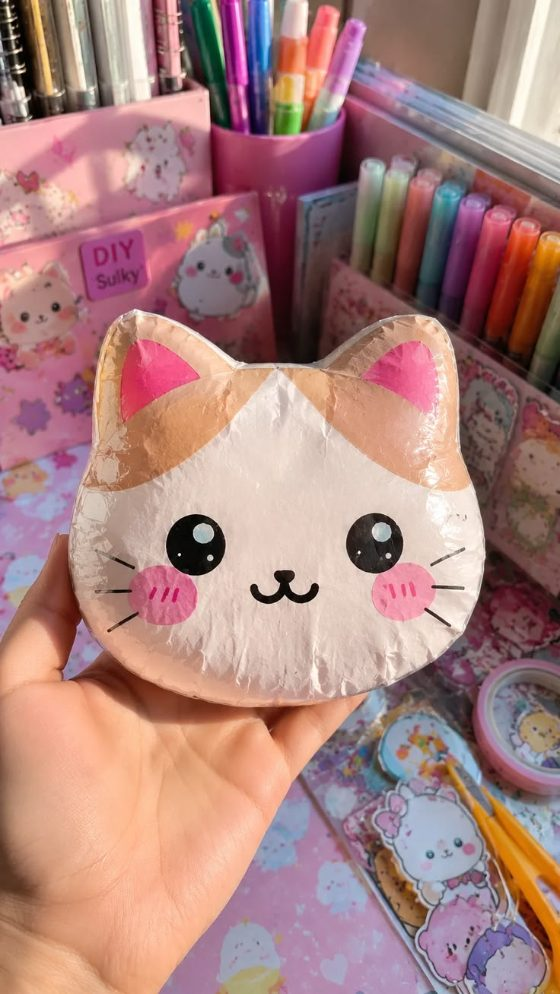
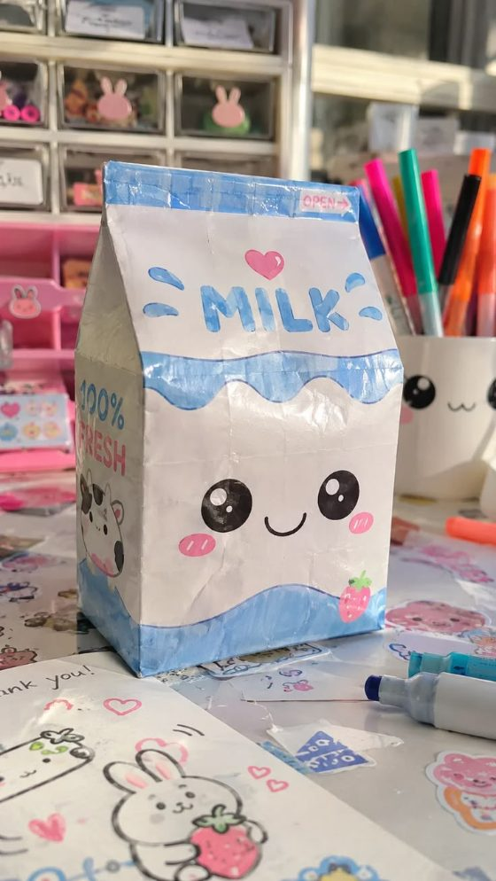
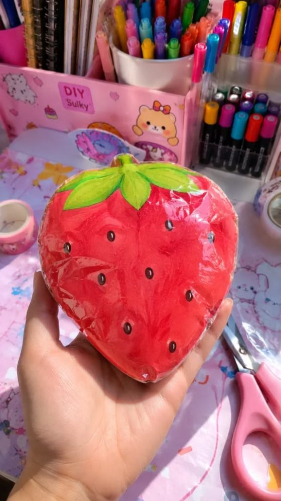
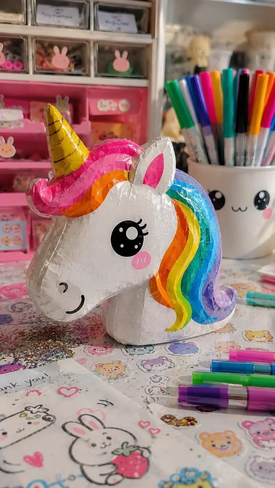
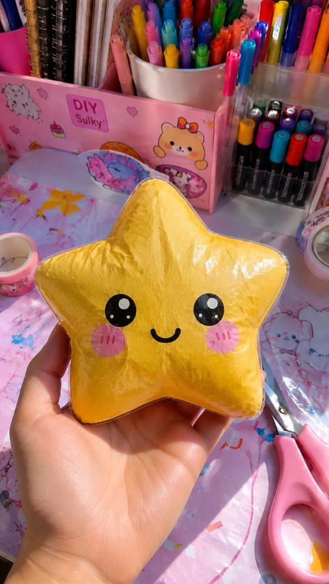
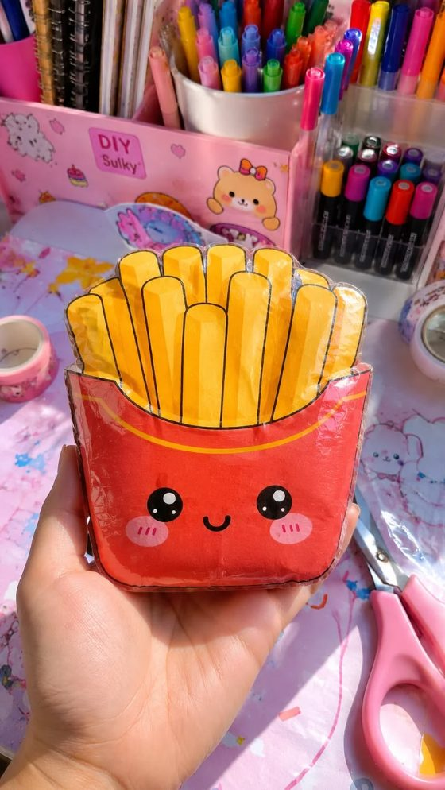
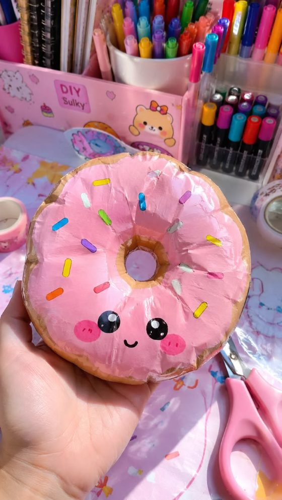
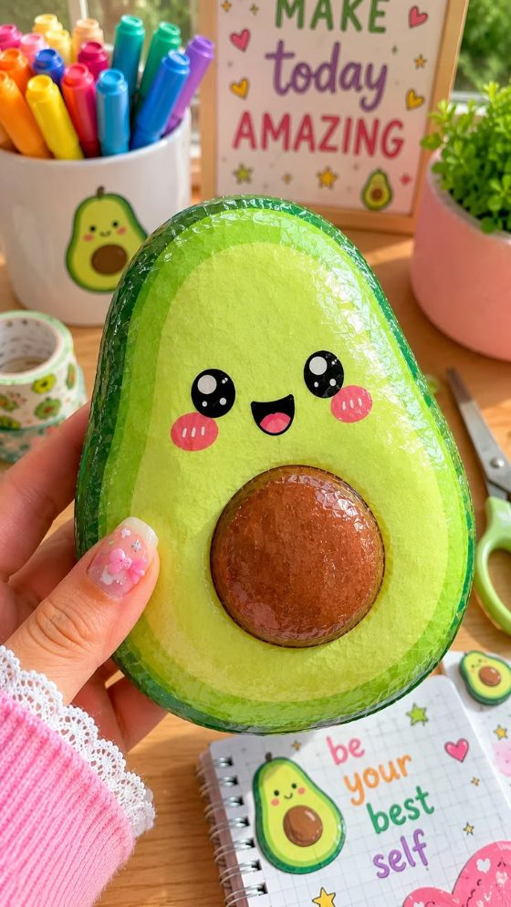
Atrae la atención como una pantalla, pero de una forma positiva
El celular atrae porque ofrece estímulos y recompensas inmediatas. Paper Squishy hace algo parecido, pero pone al niño a crear, no solo a mirar.
Atrae la mirada
Colores, formas adorables y un resultado que aparece frente a sus ojos. Un estímulo visual que puede competir con el celular.
Mantiene las manos ocupadas
Recortar, doblar y apretar. Con las manos ocupadas, la mente se concentra en crear, no en deslizar la pantalla.
Da una sensación de logro
Cada squishy terminado es una pequeña victoria. Ese “¡lo logré!” hace que el niño quiera empezar el siguiente.
Entrena el enfoque y la paciencia
Seguir los pasos hasta el final enseña atención y paciencia, sin que el niño siquiera note que está aprendiendo.
Desarrolla la coordinación
Los movimientos precisos de recortar y armar ayudan a desarrollar la coordinación motora que una pantalla no entrena.
Los acerca
Armar juntos se convierte en un momento real de conversación, risas y conexión, lejos de las notificaciones.
CÓMO FUNCIONA EN LA PRÁCTICA
Del clic al squishy terminado en 3 pasos
Paper Squishy Club es 100% digital. Después de comprar recibes el acceso de inmediato: sin esperar envíos, sin gastos de envío y sin salir de casa. Solo descarga, imprime y arma junto a tu hijo hoy mismo.
Descarga desde el área de miembros
Una vez aprobado el pago, recibes acceso a los +500 moldes en PDF, organizados por temas y listos para descargar en tu celular u ordenador.
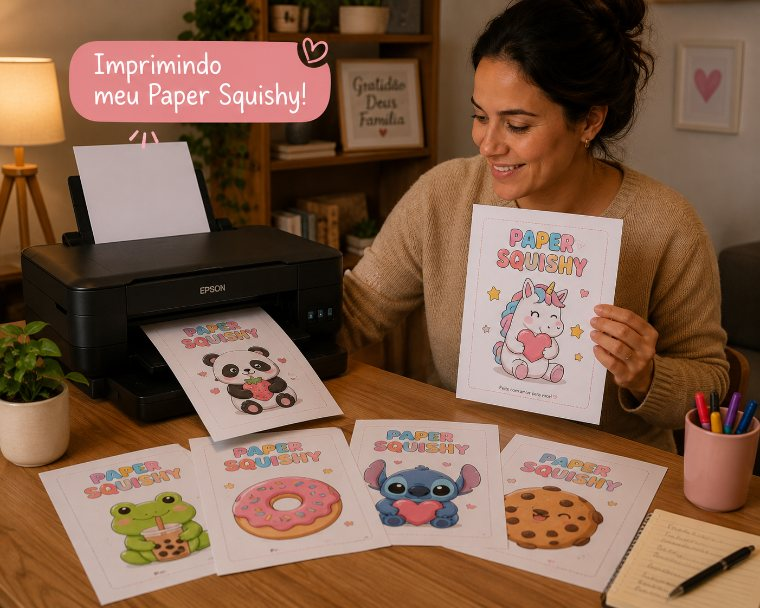
Imprime en casa
Elige tu squishy favorito e imprímelo en una hoja común, con cualquier impresora doméstica. Sin papel especial ni materiales caros: puedes imprimirlo tantas veces como quieras.
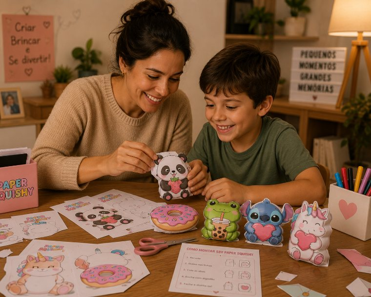
Ármalo con tu hijo
Recorta, dobla y pega siguiendo la guía ilustrada. En pocos minutos tendrán un adorable squishy en sus manos y un momento juntos que vale mucho más que cualquier pantalla.
MIRA TODO LO QUE ESTÁ INCLUIDO
Compra hoy y recibe estos bonos exclusivos 👇
+500 Moldes de Paper Squishy Listos
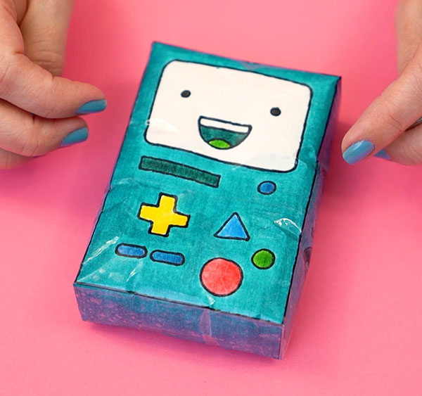
Biblioteca completa con más de 500 moldes de Paper Squishy listos para imprimir, recortar y armar en casa. Adorables, coloridos y con muchos temas diferentes.
$ 30
Tutorial de Paper Squishy desde Cero - Todos los formatos (3D y 2D)
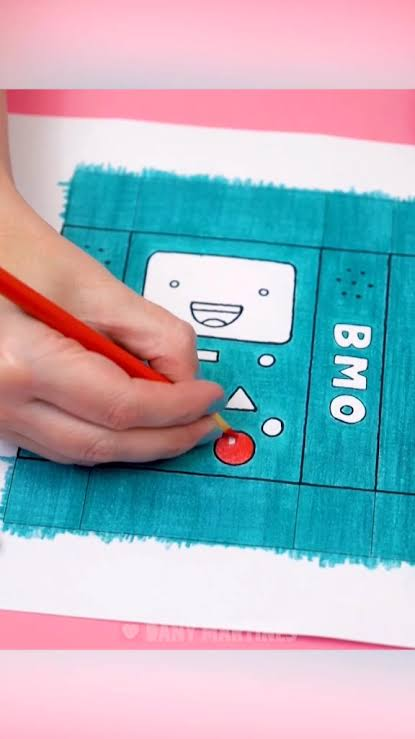
Video paso a paso que muestra cómo hacer Paper Squishies desde cero usando materiales sencillos que ya tienes en casa.
$ 20 GRATIS
+200 Hojas de Paper Doll (Varios temas)
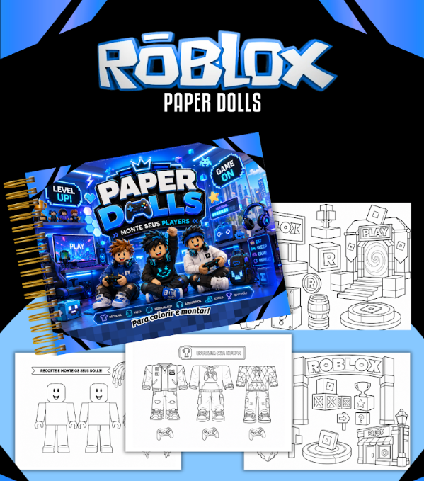
Más de 200 hojas de muñequitos y personajes adorables para imprimir, recortar y jugar. Opciones para niños y niñas: ¡diversión lejos de las pantallas!
$ 20 GRATIS
Kit de Actividades Imprimibles (Colorear, Juegos y Recortar)
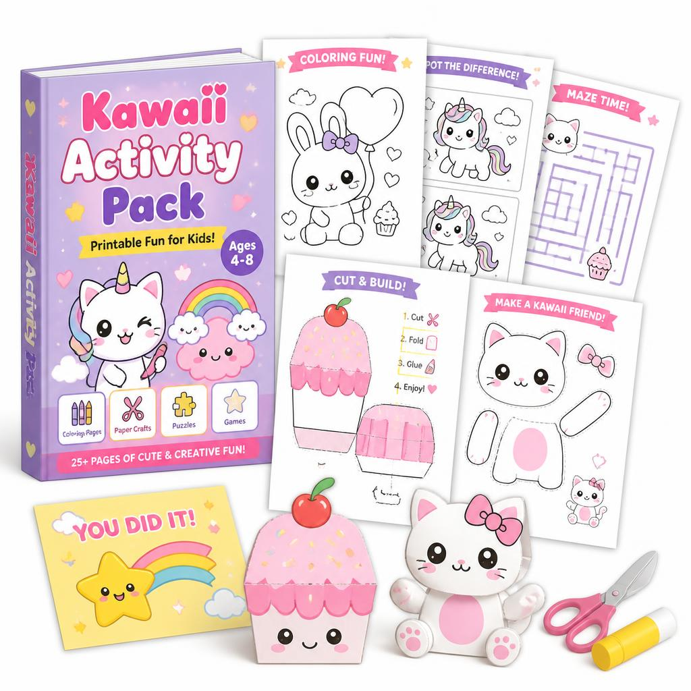
Un paquete extra con páginas para colorear, laberintos, juegos y actividades de recortar para disfrutar aún más horas de diversión creativa lejos de las pantallas.
$ 20 GRATIS
Asegura tus moldes 👇
La oferta termina en: 06:59
PAQUETE COMPLETO
De $32
Por solo
$16
pago único
- ✓+500 Moldes de Paper Squishy Listos
- ✓Tutorial paso a paso
- ✓Actualizaciones de Paper Squishy incluidas
- ✓Listos para imprimir y armar en casa
- ✓Acceso inmediato después del pago
- ✓Acceso desde celular, ordenador o tablet
- ✓Bono: Tutorial de Paper Squishy (3D y 2D)
- ✓Bônus: +200 Hojas de Paper Doll (Varios temas)
- ✓Bono extra: Kit de Actividades Imprimibles
- ✓Garantía incondicional de 30 días
500 Moldes de Paper Squishy
Para empezar a jugar hoy mismo
Por solo
$8
pago único
- ✓500 Moldes de Paper Squishy Listos
- ✓Acceso inmediato después del pago
- ✓Garantía incondicional de 30 días
Lo que dicen las familias
“¡Necesito compartirlo! Mi hijo estaba todo el tiempo con la tablet y ya no sabía qué hacer. Compré Paper Squishy y fue increíble. Pasa horas recortando, armando y coloreando. Su imaginación está a mil y, lo mejor, sin pantalla. Lo imprimimos en casa y empezó de inmediato.”
Ana Paula
“¡Paper Squishy es increíble! Mi hija siempre me pedía el celular y ahora ni se acuerda. Le encanta crear sus propios squishies e inventar historias con ellos. Es increíble cómo algo tan sencillo puede mantener su atención y estimular su creatividad.”
Carla Regina
“Al principio era bastante escéptica y pensaba que sería otra actividad que quedaría olvidada. Pero Paper Squishy me sorprendió. Mi pequeña de 5 años está encantada. Ella misma puede armar y pintar, y es una actividad que hacemos juntas y que la aleja de la televisión.”
Fernanda Lima
“Si tus hijos pasan mucho tiempo con el celular, ¡prueba Paper Squishy! Mi hijo, que ya es más grande y pensaba que era cosa de niños pequeños, está súper involucrado. Hace squishies cada vez más elaborados y hasta me ayuda a imprimir.”
Juliana Costa
“Buscaba algo diferente para las vacaciones y encontré Paper Squishy. ¡Qué descubrimiento! Mis dos hijos, de edades diferentes, están jugando juntos y creando cosas increíbles. Es muy práctico: imprimimos y empiezan a jugar enseguida.”
Patrícia Santos
“Confieso que dudaba de que algo de papel pudiera ser tan divertido, pero Paper Squishy es genial. Mi hija está encantada creando los suyos y hasta regalándolos a sus amigas. Usa su imaginación para crear nuevos modelos y colores.”
Roberta Almeida
“Si quieren un poco de paz y niños lejos de las pantallas, prueben Paper Squishy. Mi hija, que es muy aficionada a los juegos, ahora prefiere armar sus propios squishies. Inventa personajes e historias y su creatividad está creciendo muchísimo.”
Vanessa Guedes
“Me preocupaba el exceso de tiempo frente a la pantalla de mis hijos y decidí probar Paper Squishy. ¡Fue una gran decisión! Están súper concentrados, creando y jugando. Es una actividad que estimula la coordinación motora fina y la imaginación.”
Bianca Ferreira
“¡Qué producto tan increíble! Mis hijos, que son adolescentes, incluso se interesaron. Están creando squishies personalizados e intercambiándolos entre ellos. Es una forma divertida de interactuar y usar la creatividad sin depender de las pantallas.”
Gisele
¡Prueba los moldes durante 30 días!
Descarga los moldes y empieza a jugar. Si en 30 días no consideras que los Paper Squishies encantan a tu hijo, te devolvemos el 100% de tu dinero.
Sin preguntas. Sin burocracia. Sin letra pequeña.
¿Todavía tienes alguna duda?
Últimas unidades disponibles con esta condición.
Asegúralo ahora y transforma la tarde de tu hijo.